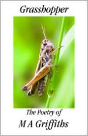

Editorial This issue is dedicated to the memory of M. A. Griffiths (1947-2009), aka “grasshopper,” “Margaret” or “Maz,” a British poet who acquired a significant readership during the eight years she posted to Internet poetry forums. She was known for her dry wit and spot-on critiques as well as for her marvelous poetry.
Maz was a rare talent and a fine person we were privileged to have known, if only online. We have solicited some essays about her and her poetry, and hope that those of you who aren’t acquainted with her work will be inspired to find out more. Her collected poems are available from Arrowhead Press.

To get a sense of the kind of poet Maz was, start with Julie Stoner’s informative essay, “Truth and Fiction in the Poetry of M. A. Griffiths,” and listen to the accompanying readings by Ann Drysdale. See the links below for further reading.
More Religious Twaddle for You, Maz Dear
by Julie Stoner
This sonnet would annoy you, I suppose.
(“I suppose is filler…this bit’s maud-
lin gimmickry…”) You’d never spare the rod
from this one, since you never did with those
I workshopped. How you must have held your nose,
critiquing my religious stuff! “Oh. God,”
you’d type, then tell me where my meter was flawed
(“Like here?”) and skewer my unconvincing close.
Yet you were kind…suspending disbelief
to teach your Christian neighbor to pursue
the Powerful, the Perfect, and the True.
Remembering that kindness makes my grief
much less, you so-called atheist, for how
could what you loved so long deny you now?
More About Maz
Acknowledgments
Special thanks to Mark Bulwinkle, Jim Fuess, William Hicks, R. Nemo Hill, Douglas Landau and Katy Maslow for allowing us to use their artwork in an unconventional way (see the contributors page for the complete list of images and artists); to Ann Drysdale for those wonderful readings; and to Bill Knott for letting us reprint several of his poems.
This issue was co-edited by Angela France, Rose Kelleher and Paul Stevens.
|